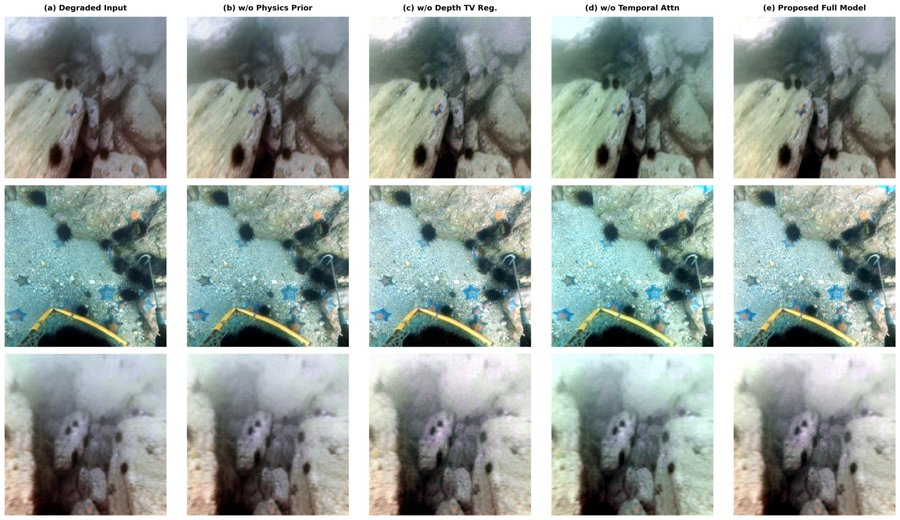
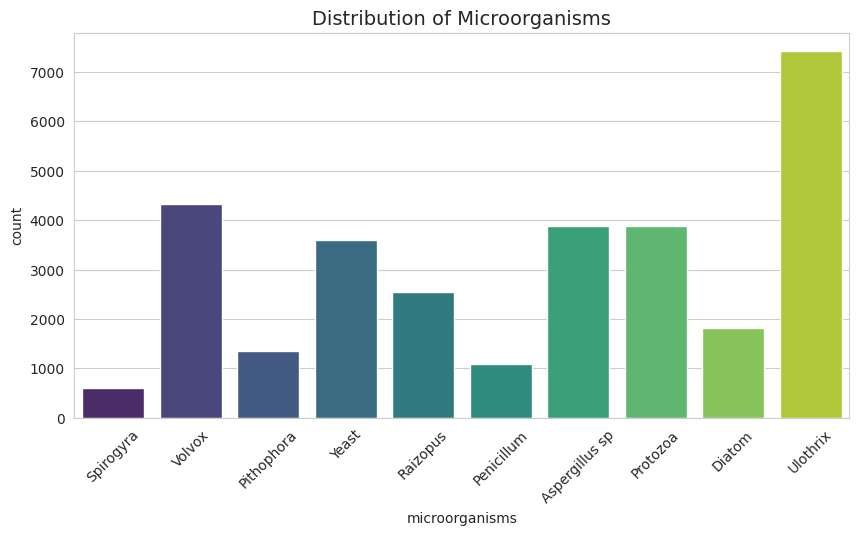

publications
Accepted, published and under-review work in reverse chronological order. My name is underlined.
under review
ICMC
Comprehensive Hardware-Aware Quantization of Microscaling Integer Biosignal Transformers for Edge Diagnostics
13th International Conference on Mathematics & Computing (ICMC 2027), IIT Guwahati · Springer LNNS Under review
Wearable and bedside ECG devices must run signal-restoration models under tight memory and energy budgets. We train a dual-resolution ResNet–Transformer masked autoencoder for 12-lead ECG in which every Transformer linear layer, weights and activations alike, uses simulated MXINT8 arithmetic (32-element blocks, shared power-of-two scales, straight-through gradients). On a held-out PTB-XL split it reaches PRD 14.19%, SNR 16.96 dB and Pearson r 0.990 at 500 Hz with 0.87M parameters; the estimated packed size is 1.61 MiB versus 3.36 MiB in FP32. Only 45% of multiply–accumulates fall in quantized layers, so attention products and convolutions are the next targets. The paper also states what it does not yet show: no FP32 reference, bit-width sweep or patient-level split.
ICMC
Comparing Conditional GAN and Diffusion Models for Synthetic ECG Generation and Minority-Class Augmentation
13th International Conference on Mathematics & Computing (ICMC 2027), IIT Guwahati · Springer LNNS Under review
Class imbalance hurts arrhythmia classifiers, and synthetic beats are one proposed remedy. We compare a class-conditional WGAN-GP and a class-conditional DDPM (about 0.7–0.8M parameters each) for generating single-lead MIT-BIH beats across five AAMI classes, measuring similarity with MMD, DTW and a Fréchet feature distance, and utility with a small 1D CNN. WGAN-GP gave lower MMD in every class; the DDPM gave lower DTW in three classes and a lower Fréchet distance (1.34 vs. 2.95). Augmentation raised five-class macro-F1 from 0.662 to 0.750 (WGAN-GP) and 0.743 (DDPM). Results come from one run with a beat-level split, so they do not describe performance on unseen patients.
ICMC
Subject-Calibrated Unsupervised Spectral-State Discovery from Ear-EEG: A Reproducible Pilot Study with Explicit Label-Audit Reporting
13th International Conference on Mathematics & Computing (ICMC 2027), IIT Guwahati · Springer LNNS Under review
A reproducible pilot pipeline for subject-calibrated discovery of spectral states from 30-second ear-EEG epochs: log-power spectrograms, interpretable spectral and temporal descriptors, per-subject standardisation and per-subject k-means. Auditing the data before modelling showed 139,803 epochs from 128 subjects but every stage label equal to −1, so the work is reported as unsupervised state discovery rather than sleep staging. A leakage-resistant 88/20/20 subject split is released for a later supervised study.
ICVGIP
NeuroSciML-Net: Physics-Informed EEG Learning for Cognitive State Classification During Hare Krishna Mahamantra Meditation and Kirtan Kriya
Indian Conference on Computer Vision, Graphics and Image Processing (ICVGIP 2026), Kolkata · ACM Under review
NeuroSciML-Net is a physics-informed, patch-based Transformer that treats multichannel EEG as channel × frequency × time spectrograms to distinguish Hare Krishna Mahamantra meditation, Kirtan Kriya and resting state. Training adds spectral-consistency and temporal-continuity regularisers. Under leave-one-subject-out cross-validation on 32-channel EEG from 15 participants it reaches 97.84% accuracy, 97.18% macro-F1 and Cohen’s κ = 0.96. The small, sex-imbalanced cohort limits generalisability.
RAIT

Spatiotemporal Physics-Aware Autoencoder for Joint Estimation of Underwater Radiance and Attenuation
7th International Conference on Recent Advances in Information Technology (RAIT 2027), IIT (ISM) Dhanbad · IEEE Under review
A physics-aware encoder–decoder prototype predicts radiance, depth, background light and channel-wise attenuation for underwater images. A temporal cross-attention block fuses current and previous frame features, and a differentiable image-formation model regularises the predicted components. The provided run reports a mean PSNR of 16.32 dB over 4,233 LSUI images; the paper states that it does not yet show validated video-level or physically calibrated gains.
RAIT
Hardware Security of Deep Neural Network Models and Accelerators: Threats, Vulnerabilities, and Countermeasures
7th International Conference on Recent Advances in Information Technology (RAIT 2027), IIT (ISM) Dhanbad · IEEE Under review
A survey of hardware security threats to DNN accelerators (FPGAs, GPUs and ASICs): side-channel attacks through timing, memory access, power and electromagnetic emissions that leak network topologies, weights or inputs, and hardware Trojans inserted through untrusted supply chains. It groups countermeasures into obfuscation, cryptographic masking and encryption, and architectural hardening, and maps attacks to accelerator components.
CS Review
Human Cognitive Behavior and Brain State Analysis in Different Physiological Conditions using EEG Signal: A Systematic Review
Computer Science Review, Elsevier Under review
2026
NetCrypt
Sugarcane Leaf Diseases Detection and Quality Assessment through Image Processing with Deep Learning Algorithms
4th International Conference on Networks and Cryptology (NetCrypt 2026), Jawaharlal Nehru University, New Delhi Accepted · oral
A deep learning framework for detecting red rot in sugarcane leaves (M.Tech thesis work). Four public datasets are merged into a 2,401-image healthy vs. red-rot set and preprocessed with Gaussian blurring, normalisation and CLAHE. A Vision Transformer and MobileNet are trained with k-fold cross-validation; the ViT reaches F1 96.25% against 93.41% for MobileNet. Integrated Gradients is used to show which image regions drive each prediction. Supported by a CSIR (Government of India) ASPIRE grant.
IC2E3

Machine Learning-Based Benchmarking of Structural Variant Detection Using Sequencing Microbes Data
4th International Conference on Computer, Electronics, Electrical Engineering and their Applications (IC2E3-2026), NIT Uttarakhand Accepted · presented
Compares Random Forest, XGBoost and Gradient Boosting for detecting structural variants in microbial genomes from long-read (third-generation) sequencing data, after exploration, cleaning, normalisation and splitting. Random Forest reached 0.988 accuracy, against 0.898 for XGBoost and 0.868 for Gradient Boosting.
AUTOCOM
Explainable Disease Risk Prediction from Electronic Health Records Using Graph Convolutional Network and SHAP
AUTOCOM-2026 Accepted
Builds a patient-similarity graph from MIMIC-IV clinical records using cosine similarity and k-nearest neighbours, then predicts in-hospital mortality with GCN and multi-head GAT models. Class imbalance is handled with SMOTE and a weighted loss; SHAP and t-SNE are used to interpret feature importance and learned representations.
2023
ICAECT
Prediction of Air Pollution using Deep Learning based LSTM and CNN Model
3rd International Conference on Advances in Electrical, Computing, Communication and Sustainable Technologies (ICAECT 2023) · IEEE Published
Forecasts PM2.5 concentration on the UCI Beijing PM2.5 dataset with CNN and LSTM models. The LSTM reached MAE 7.3 and RMSE 10.4 and the CNN MAE 8.06 and RMSE 10.90, against MAE 10.4 and RMSE 14.5 for a CBGRU baseline.
ISCON
Predicting the Patient’s Severity Using Machine Learning Applied to Lungs MRI Images
6th International Conference on Information Systems and Computer Networks (ISCON 2023), GLA University, Mathura · IEEE Published
Reviews image-processing and deep learning methods for early lung cancer detection and applies CLAHE enhancement with ResNet-50 and DenseNet-169 classifiers, reporting accuracies of 98.69% and 99.67%.
ISCON
Machine Learning based URL Analysis for Phishing Detection
6th International Conference on Information Systems and Computer Networks (ISCON 2023), GLA University, Mathura · IEEE Published
Classifies web pages as legitimate or phishing from URL-based features with Random Forest, KNN and logistic regression on a balanced set of 11,430 URLs with 87 features. Random Forest performed best (precision 97.5%, recall 99.1%, F1 97.3%).